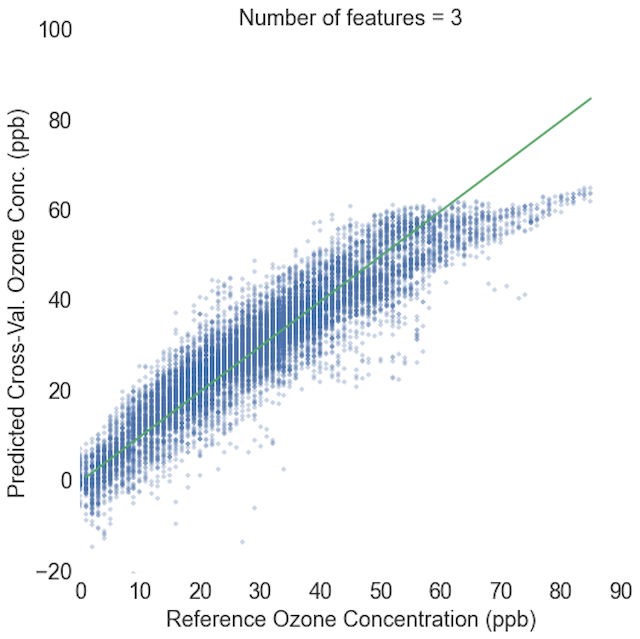
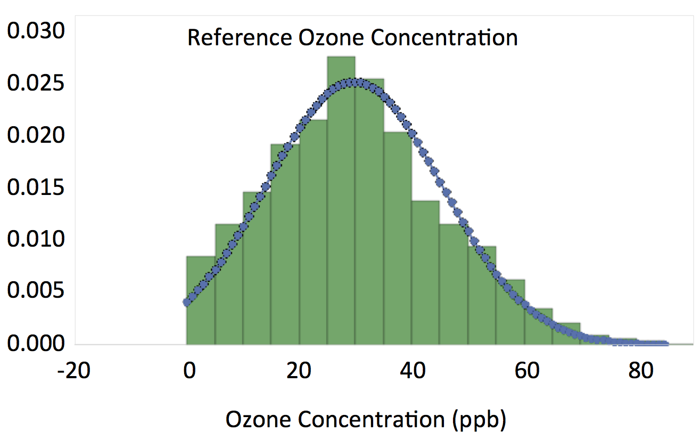
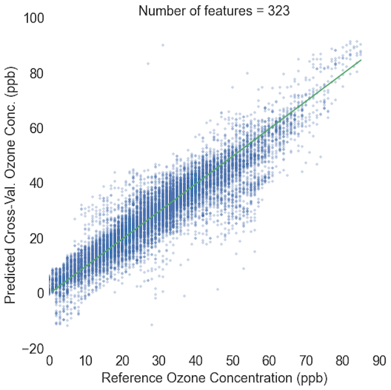
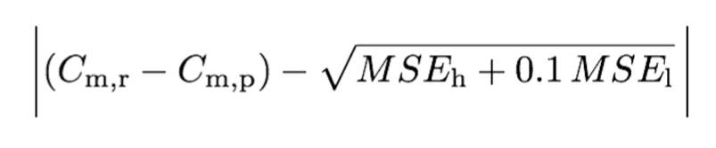
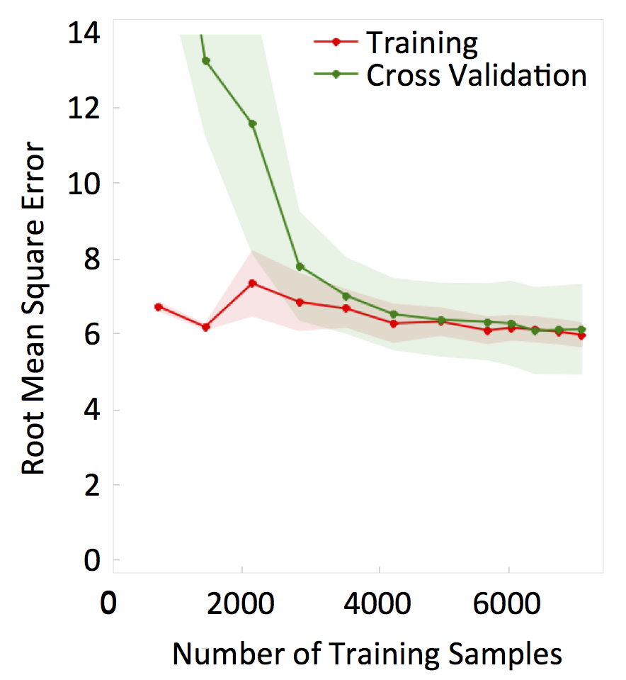
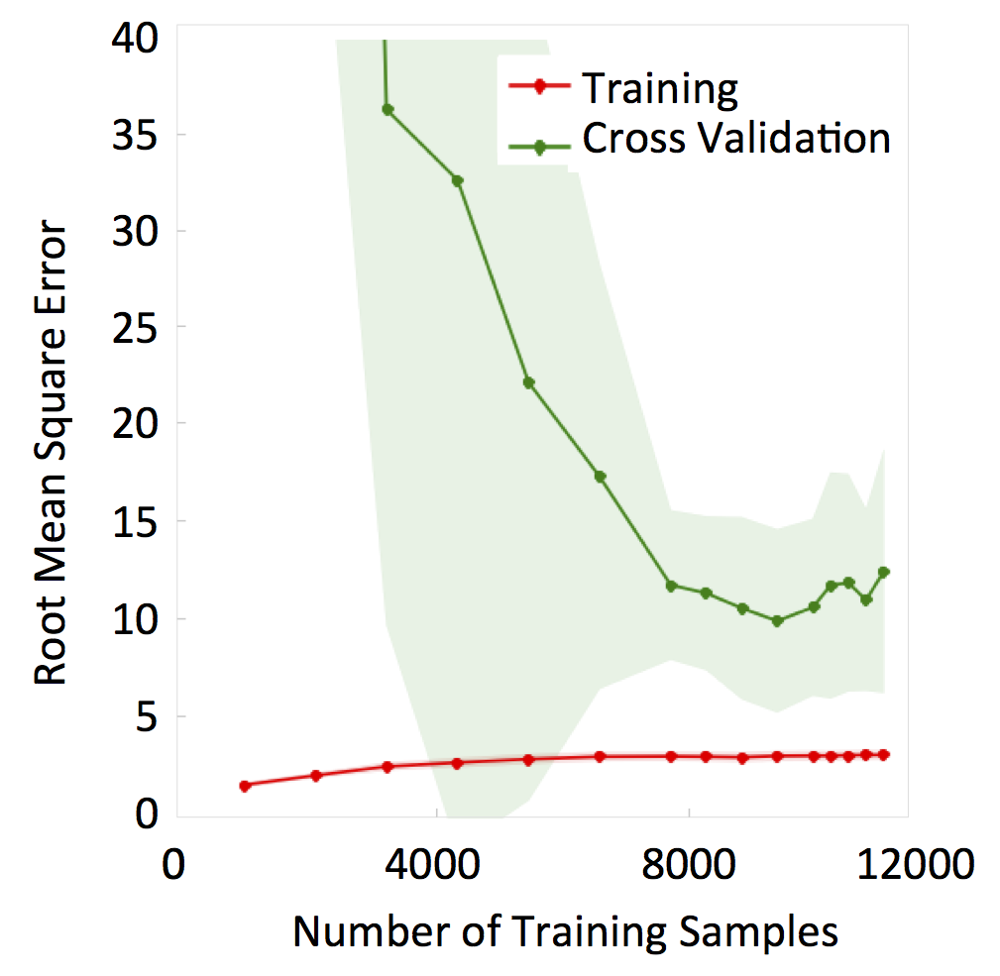
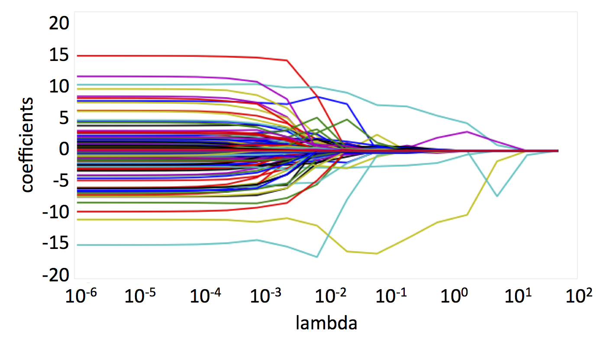

Why am I a data junkie? Because I'm excited about getting my hands on the vast reservoir of information that is waiting to be tapped. As scientists and engineers, we spend most of our time acquiring information through research and experimentation. Data science capitalizes on the opportunity to extract information from the mountains of data that have already been collected.
I've recently experienced this phenomenon in my work as a PhD candidate at the University of Colorado. My research group develops inexpensive air quality monitors using low-cost sensors, and lately, I've been exploring how machine learning can improve sensor performance. In a few short months, I have been able to significantly improve the regression models that we use to calibrate our sensors, and therefore improve the accuracy of our measurements- all without spending any time improving instrument design or performing more experiments.
The ability of data science to exponentially accelerate the pace of research is very exciting, and can be applied to almost any field. I am eager to explore the hidden possibilities of data, and push the boundaries of understanding.
Personal Work - Exploring the Spread of the Tour de France
Personal Work - Playing with D3 (in progress...)
Personal Work - Regression Modeling for Sensor Calibration
I have always valued explanatory data visualization, but the importance of exploratory data visualization has become more apparent to me as I have worked on improving the regression models we use for sensor calibrations. Check out my IPython notebook on GitHub to see all of the visualizations I used to guide my regression modeling decisions.
The plot above is a comparison between the ozone values predicted by a linear regression model, using the data from the low-cost sensors, and the ozone values measured by a reference instrument. The cross-validation root-mean-square error (RMSE) for this model is 6 ppb, which means that the mean difference between the reference ozone concentration measurements and the model predictions is 6 ppb. This RMSE is very good, especially when you consider the fact that we're comparing the performance of a $10 sensor to a $10,000+ reference instrument. However, when you look at this plot, you can see that at high ozone values (> 60 ppb), the model underpredicts ozone by an average of 10.4 ppb, with an RMSE of 11 ppb. Since exposure to high ozone concentrations can negatively impact health, researchers are most concerned about these high ozone values, and it is critical to measure them accurately. Without plotting this data, one could conclude that this model is a great fit, but this plot instantly makes it clear that it does not work well at high values.
You can observe the distribution of the predicted and reference data above. The blue lines represent how the data would look if it were perfectly normally distributed, and looking at the actual data distribution in the bins shows us that the data is close to normally distributed. The top plot represents the distribution of the reference data. There is an abrupt cutoff at a concentration of zero, since ozone concentration cannot be less than zero. Notice that when the ozone concentration is above 50 ppb, the bins match the normal distribution very closely. The ozone concentration predictions in bottom plot, on the other hand, abruptly drop off around 60 ppb, and there are no predicted concentrations above 65 ppb.
To reduce the model's underprediction at high values, I transformed the base features (ozone sensor signal, temperature and humidity) to create 321 new features. The plot above shows a linear regression with all 324 features. Adding the new features to the regression reduced the magnitude of the underprediction from at high values to 2.6 ppb, and the high-ozone cross-validation RMSE decreased slightly to 10 ppb. As expected when adding a large number of features, the variance increased, and the overall RMSE increased from 6 ppb to 7 ppb.

The histograms for the linear model with the new features show much better predictions at high values. I removed the normal distribution lines from these plots to improve the visilibility of high ozone concentrations. While these histograms look good, they are based on a model with all 324 features. Since it is always best to use the simplest model that produces good results, the next step is to try to simplify the model. Reducing the number of features in a model is also one way to reduce variance in the model.
I used forward selection to reduce the number of features in the model. I wrote an algorithm that chooses each feature based on minimizing a custom error function. The custom function is:

where Cm,r is the median of the reference ozone data when the ozone concentration is
> 60 ppb, Cm,p is the median of the predicted ozone data for high reference ozone, MSEh is the MSE at high ozone values, and MSEl is the MSE at low ozone values.

The plots above show how the custom error and RMSE change as each next-best feature is added to the regression. The top plot shows the 100 best features, and the bottom plot is zoomed in on the area in the red circle. Based on this data, I will likely select between 33 and 37 features for the model, since both the custom score and overall RMSE are low in this region. In addition to looking at the plots above, I looked at learning curves to evaluate when adding features starts to lead to overfitting.
Learning curves visualize how error for a cross-validation set and training set change as the number of training samples increases. When a fit has high bias, the training and cross-validation error converge at high error values. When a fit has high variance, as the number of samples increases, the gap between the training error and cross-validation error remains large. The plot above is a learning curve for a fit that includes all 324 features. You can see that there is a large difference between the training and cross-validation error, which is a sign of high variance.
I plotted a learning curve for each feature that I added to the model. By looking through the curves, and seeing how they change with each feature, you can tell if and when adding more features leads to overfitting. The learning curve above is for the maximum number of features I'm considering (37). The training and cross-validation lines are close together, so the model does not have a variance problem, and including up to 37 features in the model should not lead to overfitting. See my IPython notebook on GitHub to view the learning curves for the best 100 features.
Based on the plots discussed above and the statistical results, I decided to use 36 features for my model. The plot above shows a comparison between the ozone values predicted by a the new linear regression model, and the values measured by the reference instrument. The overall cross-validation RMSE is 4 ppb, the high-value RMSE is 6 ppb, and the difference in high-value medians is -1.9 ppb.
The histograms above show how well the distribution of the predicted data matches the reference data.
Another method for reducing variance is to reduce the number of features in a model (and/or the magnitude of their coefficients) using a shrinkage penalty. The plots above are visualizations that aid in the selection of the shrinkage parameter, lambda, for the lasso reduction method. The higher the value of lambda, the larger the penalty placed on high coefficient values. The top plot visualizes how the coefficients change as lambda is increased, and the bottom plot shows how the custom error function I defined varies with lambda. The optimal lambda value is the one that results in the lowest error. The overall cross-validation RMSE for the Lasso model is 5 ppb, the high-value RMSE is 6 ppb, and the difference in high-value medians is -3.7 ppb. While these statistics are significantly better than the base model, they are not as good as the forward selection results.
The best results for the cross-validation data were obtained using a linear model with features selected using forward selection with a custom error function. In addition to cross-validation data, it is important to have a true holdout data set, which is not used to choose the best model. For the true holdout data, using the best model, the overall RMSE is 3 ppb, the high-value RMSE is 4 ppb, and the difference in high-value medians is -2.2 ppb.
Other methods used in this experiment include random forest regressions and support vector machines. See my GitHub for more information.